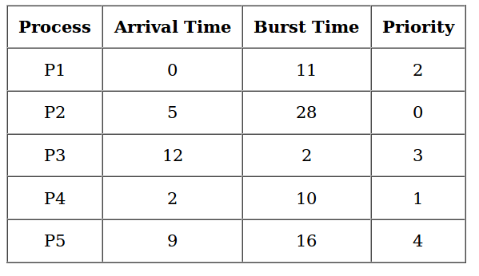
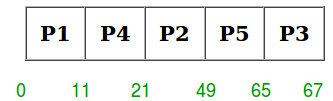

Prerequisite – Program for Priority Scheduling – Set 1
Priority scheduling is a non-preemptive algorithm and one of the most common scheduling algorithms in batch systems. Each process is assigned first arrival time (less arrival time process first) if two processes have same arrival time, then compare to priorities (highest process first). Also, if two processes have same priority then compare to process number (less process number first). This process is repeated while all process get executed.
Implementation –
- First input the processes with their arrival time, burst time and priority.
- Sort the processes, according to arrival time if two process arrival time is same then sort according process priority if two process priority are same then sort according to process number.
- Now simply apply FCFS algorithm.

Gantt Chart –

Examples –
Input : process no-> 1 2 3 4 5 arrival time-> 0 1 3 2 4 burst time-> 3 6 1 2 4 priority-> 3 4 9 7 8 Output : Process_no Start_time Complete_time Trun_Around_Time Wating_Time 1 0 3 3 0 2 3 9 8 2 4 9 11 9 7 3 11 12 9 8 5 12 16 12 8 Average Wating Time is : 5.0 Average Trun Around time is : 8.2
Code –
// Write Java code here
import java.util.*;
/// Data Structure
class Process {
int at, bt, pri, pno;
Process(int pno, int at, int bt, int pri)
{
this.pno = pno;
this.pri = pri;
this.at = at;
this.bt = bt;
}
}
/// Gantt chart structure
class GChart {
// process number, start time, complete time,
// turn around time, waiting time
int pno, stime, ctime, wtime, ttime;
}
// user define comparative method (first arrival first serve,
// if arrival time same then heigh priority first)
class MyComparator implements Comparator {
public int compare(Object o1, Object o2)
{
Process p1 = (Process)o1;
Process p2 = (Process)o2;
if (p1.at < p2.at)
return (-1);
else if (p1.at == p2.at && p1.pri > p2.pri)
return (-1);
else
return (1);
}
}
// class to find Gantt chart
class FindGantChart {
void findGc(LinkedList queue)
{
// initial time = 0
int time = 0;
// priority Queue sort data according
// to arrival time or priority (ready queue)
TreeSet prique = new TreeSet(new MyComparator());
// link list for store processes data
LinkedList result = new LinkedList();
// process in ready queue from new state queue
while (queue.size() > 0)
prique.add((Process)queue.removeFirst());
Iterator it = prique.iterator();
// time set to according to first process
time = ((Process)prique.first()).at;
// scheduling process
while (it.hasNext()) {
// dispatcher dispatch the
// process ready to running state
Process obj = (Process)it.next();
GChart gc1 = new GChart();
gc1.pno = obj.pno;
gc1.stime = time;
time += obj.bt;
gc1.ctime = time;
gc1.ttime = gc1.ctime - obj.at;
gc1.wtime = gc1.ttime - obj.bt;
/// store the exxtreted process
result.add(gc1);
}
// create object of output class and call method
new ResultOutput(result);
}
}
class ResultOutput {
ResultOutput(LinkedList result)
{
double wavg = 0, tavg = 0;
int totalprocess = result.size();
System.out.println("Process_no\tStart_time\t"+
"Complete_time\tTrun_Around_Time\tWating_Time");
// dispalay the process details
while (result.size() > 0) {
GChart obj = (GChart)result.poll();
wavg += obj.wtime;
tavg += obj.ttime;
System.out.println(obj.pno + "\t\t" +
obj.stime + "\t\t" + obj.ctime + "\t\t" +
obj.ttime + "\t\t\t" + obj.wtime);
}
// display the average waiting time
//and average turn around time
System.out.println("Average Wating Time is : "
+ (wavg / totalprocess));
System.out.println("Average Trun Around time is : "
+ (tavg / totalprocess));
}
}
// Driver code
class Priority_Preemption {
public static void main(String args[])
{
// link list for store the
// process with details (new state)
LinkedList queue = new LinkedList();
int arrivaltime[] = { 1, 2, 3, 4, 5 };
int bursttime[] = { 3, 5, 1, 7, 4 };
int priority[] = { 3, 4, 1, 7, 8 };
for (int i = 0; i < 5; i++)
// insert in new state(queue)
queue.addLast(new Process(i + 1, arrivaltime[i],
bursttime[i], priority[i]));
FindGantChart obj = new FindGantChart();
obj.findGc(queue);
}
}
Output –
Process_no Start_time Complete_time Trun_Around_Time Wating_Time 1 1 4 3 0 2 4 9 7 2 3 9 10 7 6 4 10 17 13 6 5 17 21 16 12 Average Wating Time is : 5.2 Average Trun Around time is : 9.2